Introduction to Programming and Program Development#

Introduction#
When developing an application to run on a microcontroller or other embedded system, there are five key steps which should be followed:
Clearly define the requirements of the system, planning the number of inputs and outputs required, speed, storage etc. to identify suitable hardware candidates.
Plan/design the software using flowcharts and pseudocode to describe the program and identify functions, or blocks of code, and how they link to other blocks.
Translate the flowchart into the required programming language.
Once the program is at a level where its functionality can start to be tested, testing and debugging is performed to look for errors or unexpected behaviour in software called bugs.
When the final software is commissioned, it is important to document the code so as a developer can come back to it at later date or pass the task to another team member.
Lecture Topics#

Useful Terminology#
Hello, World!#
Fig. 34 is a reproduction of “Hello, world!” written in C.

Fig. 34 Hello World programme written in C (Image source: en.wikipedia.org/wiki/File:C_Hello_World_Program.png)#
{kind=link}
The first version of Hello, World! was published in the classic book Kerningham and Ritchie, The C Programming Language, 1st Ed. Prentice Hall, 1978.
Since then, it has become common to introduce each new programming language with a version of this program.
Unfortunately, there is a lot of hidden complexity in this simple program, and it is not easy to run “Hello, World!” on a microcontroller!
What is a program?#
A program or algorithm is a recorded sequence of instructions that performs a task or set of tasks when executed to produce a specific result.
What is software?#
Software is the term used to describe collections of programs, libraries, and related data.
What is a programming language?#
A programming language is a formal notation comprising a set of instructions and rules for writing programs.
Development of programming#
The next few slides provide some historical context to the development of computer programming. For example Fig. 35 is a photograph, taken in 1957, of an early mainframe computer based at NASA Langley Research Centre. This may have well been used in the research that led to the moon landing in 1969.
In the early days of programming, programs were typed on teletypes and encoded as ASCII characters onto paper tape (Fig. 36). These paper tapes where used to load programs and data into mainframes like that shown in Fig. 35. Later, programs were stored on magnetic tape, then magnetic disks and these days are stored servers to be downloaded over networks and loaded into powerful PCs or mobile devices using flash memory and SSD drives.
Fig. 37 shows an image of a modern laptop and the programming tools and languages (in this case Python) that are used to develop programs these days.
Fig. 35 IBM type 704 electronic data processing machine used for making computations for aeronautical research at NASA Langley Research Center – 21st March 1957. (Image source: www.flickr.com/photos/nasacommons/9467782802)#
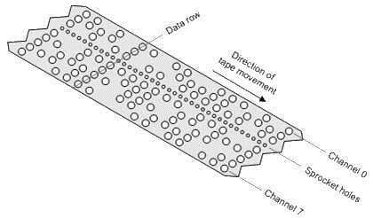
Fig. 36 Early program source code! Input into a computer with punched paper tape. Image Source: How it was: Paper tapes and punched cards | EETimes#
Fig. 37 Writing programs on a modern high resolution display screen. (Image source: unsplash.com/photos/ieic5Tq8YMk by Chris Reid)#
Programming Languages#

Programming Language Level Vs Complexity#
Fig. 38 shows how code complexity that must be handled by the programmer is related to language level.
{kind=link}
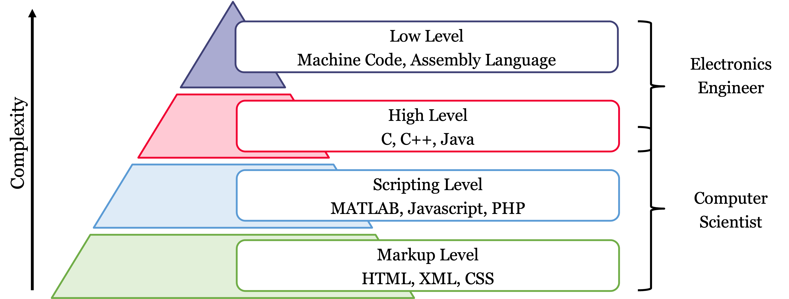
Fig. 38 Programming language level versus complexity.#
There is more code complexity at the top because the languages there are “low level” - you need to tell the computer what to do at a very granular level. Languages at the bottom of the pyramid are “high-level” because they provide a simpler way for the programmer to define complex operations without needing to be explicit about how the processor will perform the tasks. Tools are needed to convert that code into the low-level instructions that the computer needs to execute. High-level codes are converted into machine code by compilers, interpreters and web browsers.
Programming levels#
{kind=link}
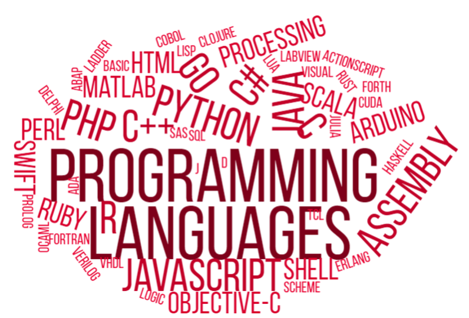
High-level languages#
High level languages are written in a form that is close to human language, enabling the programmer to just focus on the problem being solved without any knowledge of the hardware it is running on.
Examples include: C++, Java, Pascal, Python, Visual Basic.
Low-level languages#
Low level languages are used to write programs that relate to the specific architecture and hardware of a particular type of computer and are much closer to the native language of a computer (binary).
Examples include: Assembly Language, Machine Code
The C Programming language#
C is a general-purpose computer programming language. It was created in the 1970s by Dennis Ritchie, and remains very widely used and influential. Wikipedia - C (programming language)
C might be described as a “mid-level language”. It is a compiled language and it has features that allow code to be written at a fair distance from the machine instructions. At the same time it provides structures that allow the detailed manipulation of data, memory and I/O at a level that is quite close to the machine.
In this course, we will be using a dialect of C that has been specifically designed for the programming of Arduino devices such as the 8-bit Atmel ATmega328 which is used in the Arduino Nano.
C is a very influential language. It is still used widely for writing operating system kernels, command-line tools, hardware drivers, and microcontroller applications. The syntax of C is the basis of many of the compiled and interpreted high-level languages that are in use today.
Flowcharts#

This Image by Unknown Author is licensed under CC BY-SA
{kind=link}
What is a Flowchart?#
A flowchart is a pictorial representation of the logic flow through a program.
Flowcharts are a useful tool for planning, visualizing and documenting a program without having to write any code.
Basic flowcharts are convenient because they
Don’t require the viewer to have an in-depth knowledge of programming
Don’t require the viewer to have knowledge of a specific programming language
Useful for visualizing how blocks of code interact with one another
Can be a useful tool in identifying flaws and bottlenecks in large and complex algorithms
Flowcharts Vs Code#
Consider the simple flowchart shown in Fig. 39 representing the printing of the text string “Hello, World!”[1].
{kind=link}
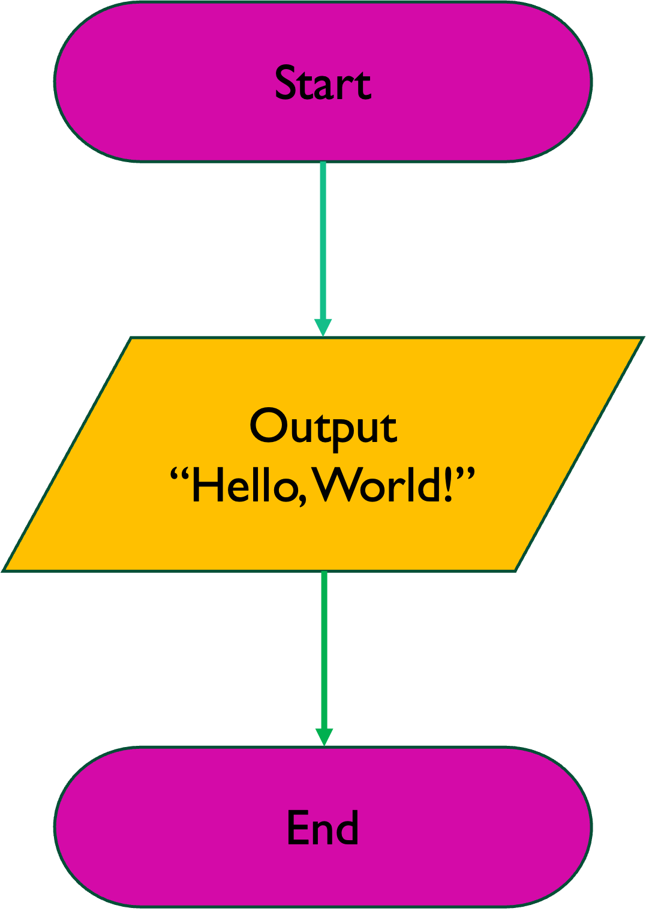
Fig. 39 A flowchart representing the “Hello, World!” program.#
Bash (a command-line shell used in Unix and MacOS)#
echo "Hello, World!"
BASIC#
PRINT "Hello, World!"
MATLAB#
disp('Hello, World!')
Python#
print("Hello, World!")
C (for Arduino)#
(a shell used in Unix and MacOS)
puts("Hello, World!");
C++#
(a shell used in Unix and MacOS)
std::cout << "Hello, World!" << std:endl;
HTML#
<p>Hello, World!</p>
JavaScript#
document.write('Hello, World!');
Flowchart building blocks#
Terminal: start/end block#
{kind=link}
Terminal: program flow#
{kind=link}
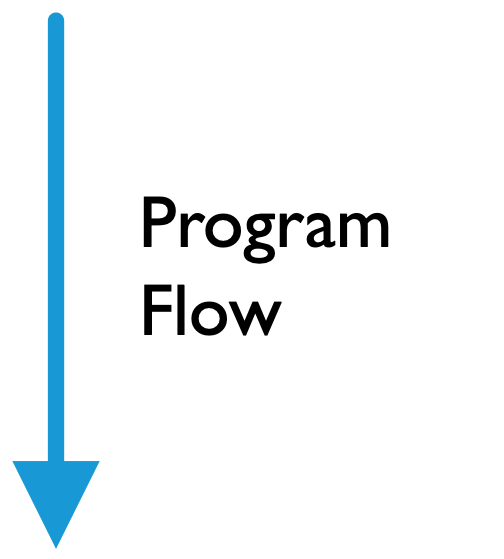
Process block#
{kind=link}
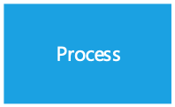
Suprocess block#
{kind=link}
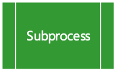
Decision block#
{kind=link}
I/O block#
{kind=link}
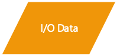
Rules for drawing flowcharts#
Flowcharts are usually drawn top to bottom but can be also be drawn left to right.
Flowcharts must begin with a “start” symbol and finish with an “end” symbol.
The spacing between all items should be consistent
The direction of flow between each block should be indicated with an arrow.
Connecting lines should never overlap.
In short flow charts should look visually tidy and the program flow should be obvious to the viewer.
Flowchart Drawing Packages#
Microsoft Visio (Windows and web only)#
{kind=link}
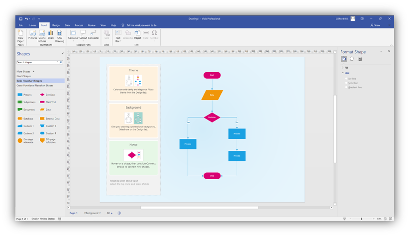
Microsoft 365#
{kind=link}
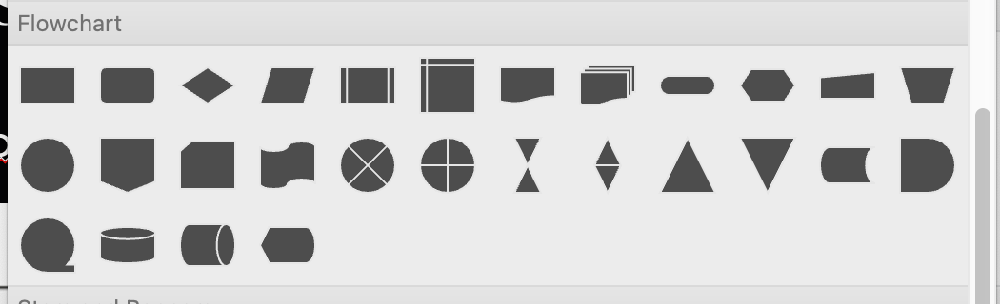
Get Swansea University Office 365 (now Microsoft 365) from myuni.swan.ac.uk.
Other flowchart drawing tools#
SmartDraw#
For MacOS
{kind=link}
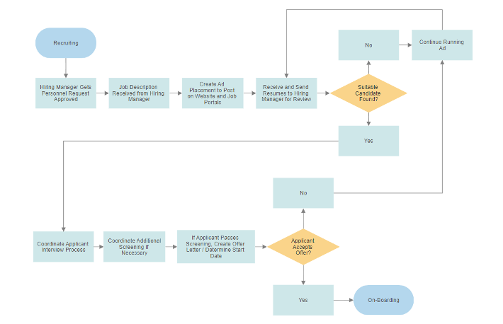
Creately#
Web-based drawing tool
{kind=link}
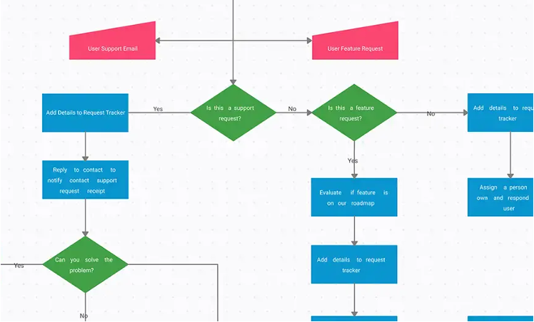
Using flowcharts to capturing the most common program constructs#
From a software designer’s point of view, any program function can be described using only three program constructs:
Sequence: this construct performs one task after another in a sequence. It is a group of instructions to be performed one after another in the order shown in the program.
Decision: this construct performs a task or a sequence of tasks based on the result of a test condition.
Repetition: this construct is for a process that repeats until a condition which will stop the process is satisfied[2]. Repetition is used to repeat a a sequence over and over again.
Sequence#
A sequence (Fig. 40) is represented as a set of process blocks (tasks) connected by program flows. The tasks are executed in the order shown by the arrows from top to bottom.
{kind=link}
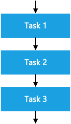
Fig. 40 Flowchart for a sequence of tasks#
The program shown in Fig. 40 might be represented in psuedocode[3] as
START;
Task 1;
Task 2;
Task 3;
END;
Decision#
A decision (Fig. 41) is represented as a decision block followed by flows which depend on the outcome of the decision.
{kind=link}
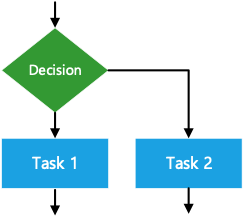
Fig. 41 Flowchart for a decision#
The program shown in Fig. 41 might be represented in psuedocode as
START;
IF condition one is true
DO
Task 1;
:
END_DO
IF condition two is true
DO
Task 2;
:
END_DO
END;
Repetition#
Repetition (Fig. 42) is represented as a decision block, then a sequence of tasks and a flow that returns to the original decision. The tasks are repeated until the condition for ending the repeated sequence is met.
{kind=link}
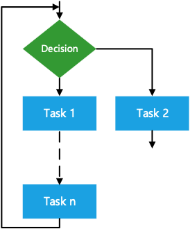
Fig. 42 Flowchart for a sequence of tasks#
The program shown in Fig. 42 might be represented in psuedocode as
START;
UNTIL condition is true
Task 1;
:
Task n;
THEN
Task 2;
:
END;
Example 1: A sequence#
Task: Find the sum of numbers 1 to 10
Program design method 1:
Brute force method using the Sequence construct,
Add number 1 to sum, then add, number 2, then add number 3 …
Continue the process until all numbers are added!
Solution to task as a sequence#
Fig. 43 shows the flow chart of this program.
{kind=link}
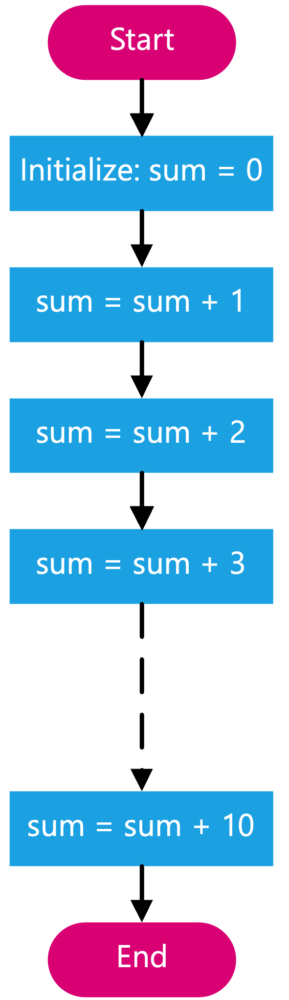
Fig. 43 Flowchart of a program to sum the first 10 numbers written as a sequence.#
Program shown in Fig. 43 written in pseudo code#
START
sum = 0
sum = sum + 1
sum = sum + 2
sum = sum + 3
:
sum = sum + 10
END
Example 2: Decision and a Loop#
Task: Find the sum of numbers 1 to 10
Program design method 2:
Use the decision and repetition constructs:
Solution to task 1 using a decision and repetition#
Fig. 44 shows the solution of task 1 using a decision and repetition.
{kind=link}
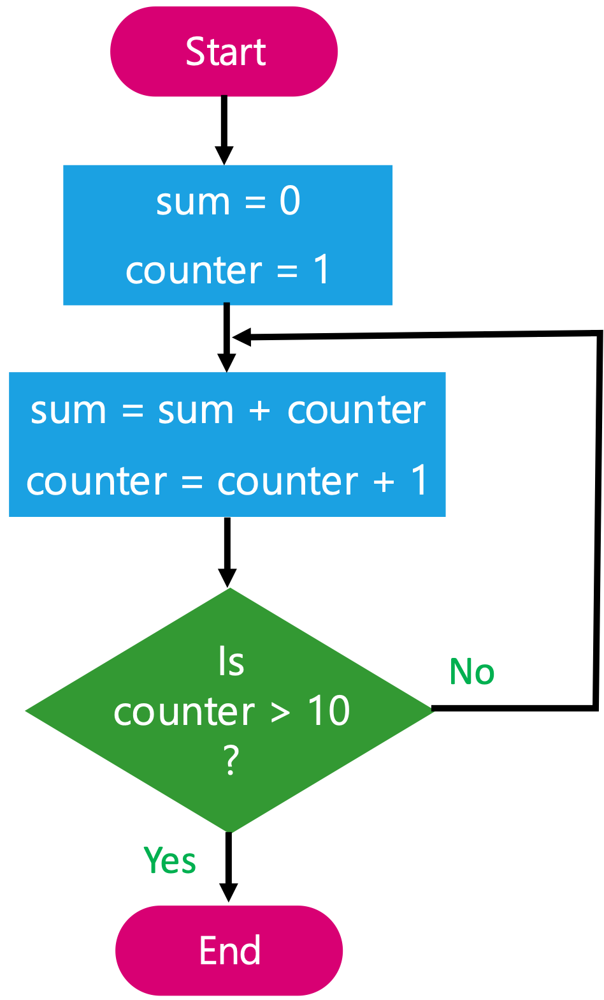
Fig. 44 Flowchart of the solution to task 1 using a decision and repetition.#
Program shown in Fig. 44 written in pseudo code#
START
sum = 0
counter = 1
WHILE counter < 11
DO
sum = sum + counter
counter = counter + 1
END_DO
END
Another Example Program#
Consider a program that asks a user for a ‘limit’ value and sums the numbers up to that limit before outputting the sum?
I.e. \(\mathrm{sum} = 1 + 2 + 3 + \dots n\)
The program that solves this project is illustrated by the flowchart shown in Fig. 45. This program has a sequence, a decision and repetition. It also has an input where the limit (\(n\)) is entered and an output where the sum is displayed.
{kind=link}
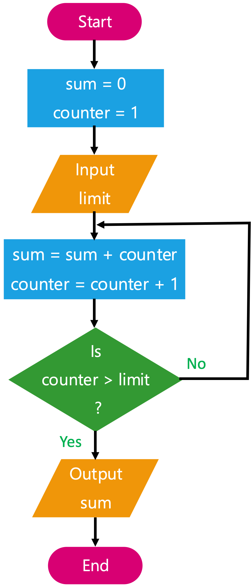
Fig. 45 A program that asks for a limit value and sums numbers up to that limit before outputting the sum.#
Let us tabulate the results of this program assuming that \(n=4\).
We will complete the table in class:
|
|
|
|---|---|---|
\(0\) |
\(1\) |
|
\(2\) |
||
\(3\) |
||
\(4\) |
||
\(5\) |
How many ways can we write the same program?#
For our program summing the numbers up to a limit, there are three key parts.
Sum (S):
sum = sum + counterIncrement (I):
counter = counter + 1Check (C): Has condition been met?
These can be theoretically be combined in 8 different ways, the first six of which as shown in Table 2. Three implementations three are illustrated in {numref}`
(variation 6), {numref}week03:fig:isc (variation 4), {numref}week03:fig:isc` (row 2).
Variation |
Part 1 |
Part 2 |
Part 3 |
|---|---|---|---|
1 |
C |
S |
I |
2 |
C |
I |
S |
3 |
I |
C |
S |
4 |
I |
S |
C |
5 |
S |
C |
I |
6 |
S |
I |
C |
{kind=link}
Fig. 46 Variation 6: Sum - Increment - Check#
{kind=link}
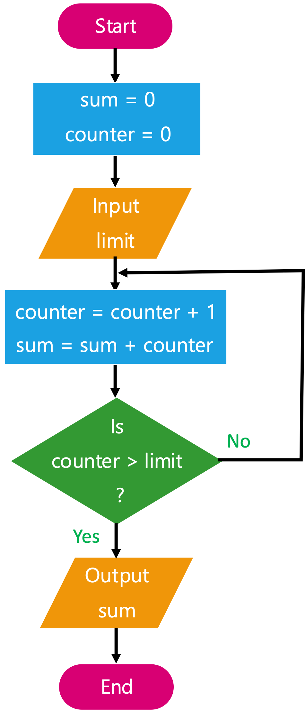
Fig. 47 Variation 4: Increment - Sum - Check#
{kind=link}
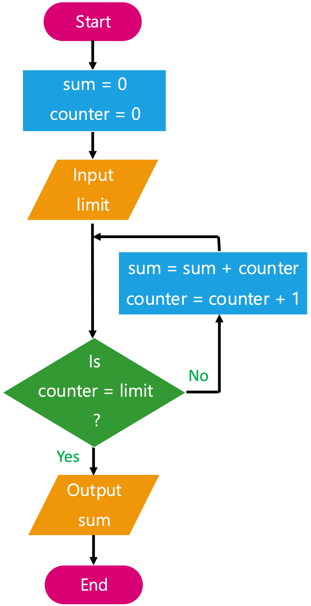
Fig. 48 Variation 2: Check - Increment - Sum#
Any more?#
Let us tabulate the results of this program assuming that \(n=4\).
|
|
|
|---|---|---|
\(0\) |
\(4\) |
|
\(3\) |
||
\(2\) |
||
\(1\) |
||
\(0\) |
A flow chart that implements this variation is given in Fig. 49.
{kind=link}
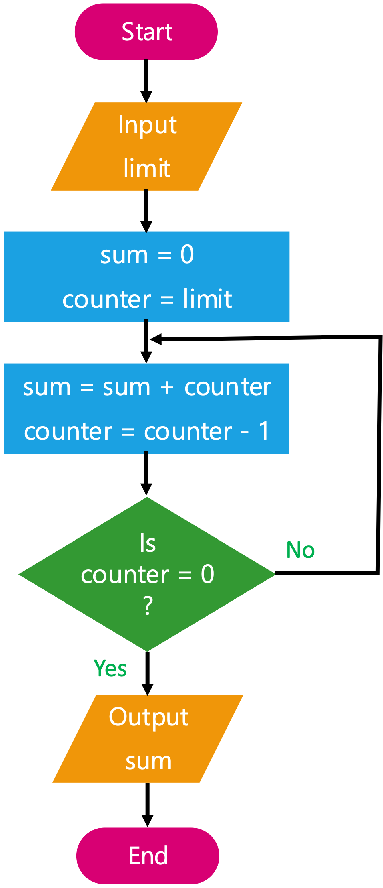
Fig. 49 Another variation: Check - Decrement - Sum#
Self-directed learning#
See if you can write the other eight flowcharts for a program that sums the numbers 1 to n.
To get you thinking from a programmer’s point of view, consider the steps required to perform a task we usually take for granted, such as making a cup of tea, and what a flowchart for this might look like.
After you’ve had a go at these, drop a message on the discussion forum for this week to let us know how you got on and which drawing package you found the best. Feel free to include any tips you find useful.
Modular Programming#
{kind=link}
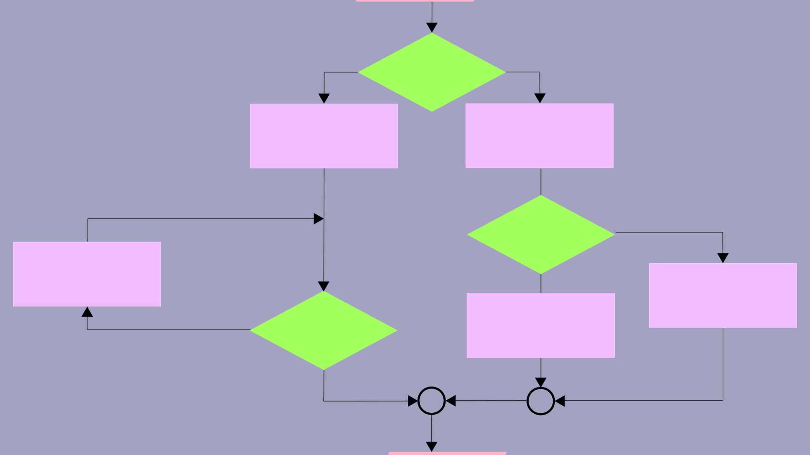
This Image by Unknown Author is licensed under CC BY-SA
What is a module?#
The basic approach to modularization is to consider a top-down design where the top level defines the main function, and a separate module represents each smaller function in the program (see Fig. 50.
{kind=link}
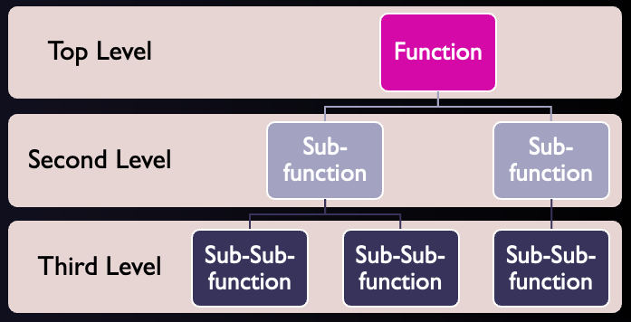
Fig. 50 A program built from modules#
Each module is treated as a box which can have an input and output.
As long as the input and output requirements remain the same, the module code can be changed without affecting the rest of the program.
Example Task#
Write a program to perform n different tasks with a ten second delay between each task.
The program we have been discussing that sums the numbers 1-10 can be used to simulate a delay.
Example program - Non-Modular Approach#
DO
Task 1
END
/* Delay between task 1 and task 2 */
DO
number = 0
WHILE number < 11
DO
number = number + 1
END_DO
END_WHILE
END
DO
Task 2
END
/* Delay between task 2 and task 3 */
DO
number = 0
WHILE number < 11
DO
number = number + 1
END_DO
END_WHILE
END
DO
Task 3
END
:
Change the specification#
Now suppose that we want to change the delay between tasks to 20 seconds.
Using a non-modular approach the developer/programmer now needs to change the line
WHILE number < 11
to
WHILE number < 21
For each of the n-1 times it is used.
Example program - Modular Approach#
The code that implements the delay is made into a module which is called when needed
MODULE delay
DO
number = 0
WHILE number < 21
DO
number = number + 1
END_DO
END_WHILE
END
END_MODULE
The modular program becomes:
DO
Task 1
END
/* Delay between task 1 and task 2 */
DO
delay
END
DO
Task 2
END
/* Delay between task 2 and task 3 */
DO
delay
END
DO
Task 3
END
:
By using a modular approach to program this task, the developer/programmer need only change one value to adjust the delay, independent of how many times the delay is called between tasks in the program.
We can take this idea further by parameterising the delay value itself. To code might now look like:
MODULE delay(delay)
DO
number = 0
WHILE number < delay
DO
number = number + 1
END_DO
END_WHILE
END
END_MODULE
We can now have variable length delays between tasks:
DO
Task 1
END
/* Ten second delay between task 1 and task 2 */
DO
delay(10)
END
DO
Task 2
END
/* Twenty second delay between task 2 and task 3 */
DO
delay(20)
END
DO
Task 3
END
:
We will return to this idea when we look at functions in C.
Activity#
With the time remaining can you represent this program as a flow chart?
Feel free to work individually or in small groups
Solution#
See Fig. 51 in the notes online.
{kind=link}
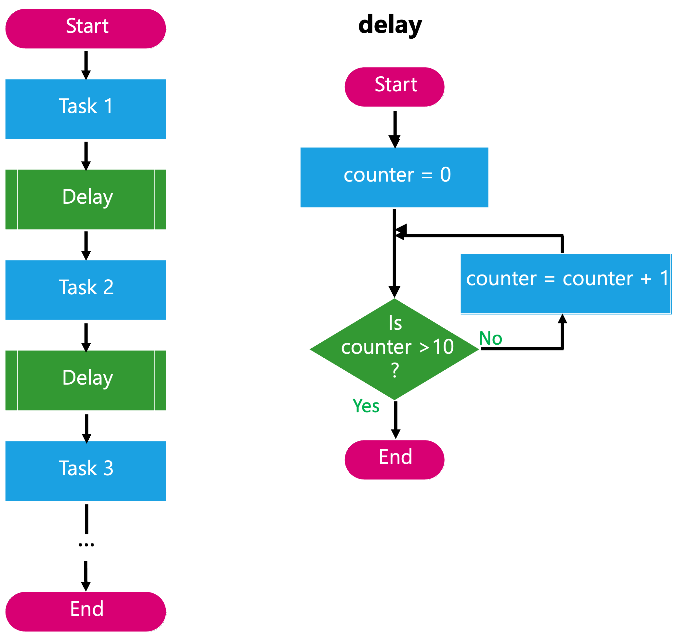
Fig. 51 Implementing a delay sub-program using a modular approach#
Summary#
In this chapter we have:
Defined terminology relating to programming and looked at how languages can be classified as high or low based on the level of abstraction from the architecture it is to be run on.
Looked at flowcharts defining the standard symbols and looking at how they are used to represent a program.
Introduced the use of sub-processes to allow modular programming for splitting up a program or repeating common elements.
On Canvas#
This week on the canvas course page, there is:
a discussion forum to talk about the Self-directed learning;
some supplementary resources; and